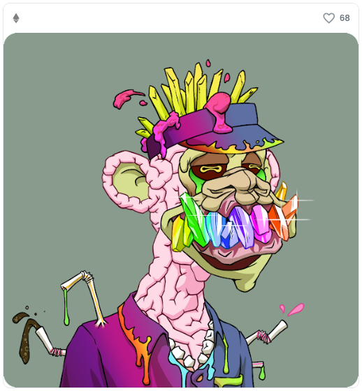
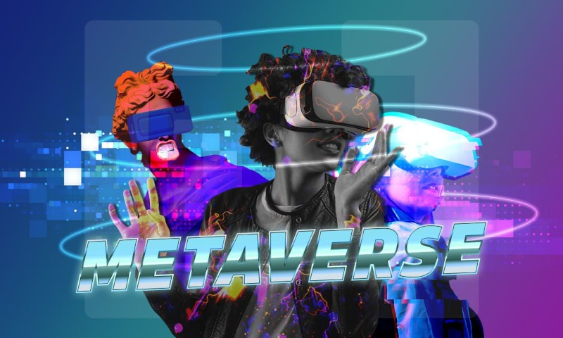
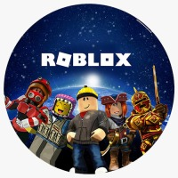
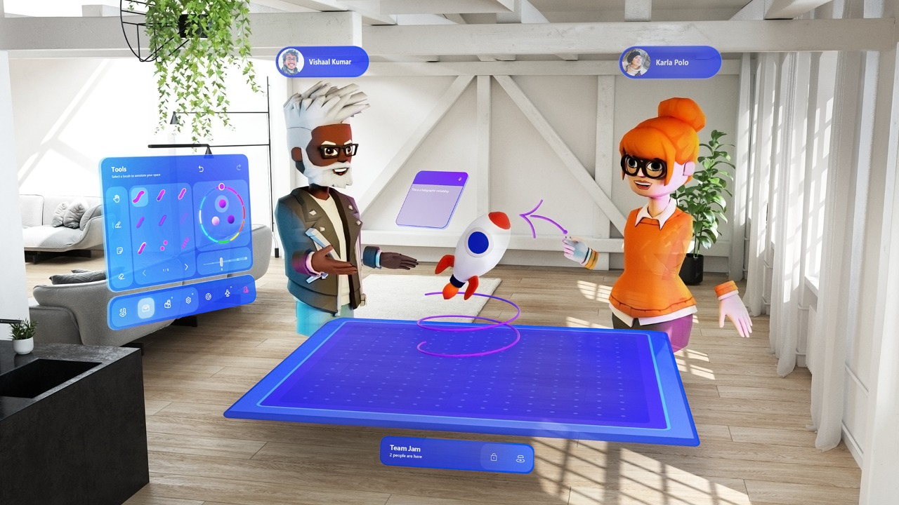

NFTs (non-fungible tokens) são tokens não fungíveis ou, basicamente, um título de propriedade digital
que não pode ser fraudado, mas pode ser emitido e negociado totalmente online, de forma eficiente e
segura.
Tokens em geral (não só os NFTs) rodam em um protocolo ou tecnologia chamada blockchain. De
forma resumida, blockchain é um sistema que permite rastrear o envio e recebimento de alguns tipos
de informações pela internet. São pedaços de código gerados online, que carregam informações
conectadas, como blocos de
dados que formam uma corrente.Tokens em geral (não só os NFTs) rodam em um protocolo ou tecnologia chamada blockchain. De
forma resumida, blockchain é um sistema que permite rastrear o envio e recebimento de alguns tipos
de informações pela internet. São pedaços de código gerados online, que carregam informações
conectadas, como blocos de dados que formam uma corrente.
A compra e venda se dá por meio de plataformas digitais exclusivas para negociações de NFTs. São
marketplaces específicos para esse tipo de token. Os NFTs são precificados e pagos em criptomoedas
– em geral, o ethereum.
Por que essa tecnologia vale tanto?
O blockchain consegue reverter a “internet pirata” para a “internet do valor”. Você passa a assegurar
propriedades digitais. Uma obra de arte, por exemplo. Ela pode circular à vontade na Internet. Serão
cópias. A autenticação dela, sempre, será sua. Você terá a obra digital original.
De acordo com a Nasdaq, o volume de vendas de NFTs, só no primeiro semestre de 2021, atingiu
US$ 2.5 bilhões.
• Noticias famosas
Talvez o exemplo mais famoso de NFT, cuja notícia de aquisição rodou o
mundo, seja o quadro digital do Beeple, criptoartista, vendido por US$ 69
milhões em um leilão da Christie’s, em março deste ano.

Neymar Jr. compra dois NFTs por R$ 6,2 milhões. São duas personalidades
globais, ou seja, que o mundo todo conhece e falam com bilhões de pessoas
pelo mundo. Ambos decidiram tornar as compras públicas e Neymar gostou
tanto do macaco mal-humorado que até trocou a sua foto do Instagram pelo
NFT
Neymar mostrou que está realmente interessado em NFTs e voltou a atacar no mercado de tokens não fungíveis. Nesta terça-feira, 19, o o craque brasileiro comprou um item da coleção Mutant Ape Yach Club (MAYC) por quase R$ 800.000. O MAYC #10953 é, de acordo com o site Rarity Tools, o 1.757º mais raro de toda a coleção, que pode ter até 20.000 tokens, e foi adquirido pelo jogador do PSG por 55 ETH - o ether está cotado atualmente a US$ 3.100, o que significa que o item digital custou pouco mais de US$ 170.000.
Metaverso
METAVERSO E SEU USO COM O PUBLICO: Com o aumento da popularidade do
metaverso grandes empresam buscam a implantação desse serviço virtual para a
abrangência de novos públicos á suas empresas.
• Epic Games
Em 6 de agosto de 2021 a
cantora internacional
Ariana Grande juntamente
Fortnite da Epic Games
iniciou um evento ao vivo
para a comunidade do jogo
onde pode ter a interação
com o publico apresentando
suas músicas, novos itens
dentro do jogo e missões a
comunidade.
O mercado de jogos eletrônicos é, inclusive, um dos que tem muito a ganhar com o
novo mundo virtual. Os universos 100% digitais e interativos presentes nos games nos
mostram um pouco do que poderemos ter num futuro próximo. A Epic Games, empresa
de jogos eletrônicos por trás de grandes títulos como Fortnite e dona da Epic Store,
levantou US$ 1 bilhão em uma rodada de investimentos realizada no mês de abril para
financiar “sua visão de longo prazo para o metaverso”.
A rodada de investimento contou com um aporte estratégico adicional de 200 milhões
de dólares da Sony Group Corporation, reforçando o relacionamento da duas empresas e
a missão que ambas possuem em avançar o
estado da arte em tecnologia, entretenimento e
serviços on-line socialmente conectados.
O próprio Fortnite já promoveu shows e
eventos de marcas dentro de seu mundo
digital, como em agosto deste ano, quando a
cantora americana Ariana Grande fez
apresentações dentro do jogo para milhões de
pessoas. Além dela, outros artistas consagrados
da música pop já apareceram por lá, como
Travis Scott , Steve Aoki e Marshmallow.
Segundo Tim Sweeney, CEO e fundador da
Epic Games, “o segredo do futuro da Epic está
naquele tentáculo de seus jogos mais populares
que remete às experiências sociais”. Essa impressão é endossada pelo presidente e CEO
da Sony Kenichiro Yoshida: “A Epic continua a trazer experiências revolucionárias.
Estamos entusiasmados em fortalecer nossa colaboração para trazer novas experiências
de entretenimento para pessoas ao redor do mundo”, garante ele.

Além das colaborações com a Sony em questões relacionadas à futura realidade virtual
móvel, os mais recentes investimentos da Epic em tecnologia de renderização digital
apontam suas intenções em seguir firmemente esse caminho. É o caso, por exemplo, do
Metahuman Creator, ferramenta Unreal Engine baseada em nuvem para criar avatares
hiper-realistas em menos de uma hora.
De acordo com Sweeney, a tecnologia necessária para construir o seu metaverso já está
disponível, e mais investimentos em computação em nuvem e realidade virtual serão
feitas nos próximos meses.
Roblox
A Roblox Corporarion, plataforma global que
reúne milhões de pessoas por meio de
experiências compartilhadas, é uma outra
companhia que está investindo em seu próprio
metaverso. Segundo o CEO da companhia, David
Baszucki, o espaço “será um lugar onde as
pessoas poderão se reunir em milhões de
experiências 3D para aprender, trabalhar, jogar,
criar e socializar”.

Em setembro deste ano, ela lançou um recurso
inédito que une o metaverso e lançamentos
musicais. Chamada de Roblox Listening Party
(Festa da Escuta, em tradução livre), a novidade permitirá que artistas lancem novos
álbuns com experiências selecionadas, fazendo com que milhões de fãs possam ouvir
suas músicas enquanto saem com seus amigos dentro da plataforma, por exemplo.
A cantora norte-americana Poppy foi a primeira a aproveitar a ferramenta dentro da
plataforma social para lançar o seu mais novo álbum, Flux, que estreou no dia 24 de
setembro. Para esta primeira Listening Party, a música foi integrada em todas as
experiências populares, permitindo que os fãs pudessem curtir as novas faixas enquanto
decoravam a
casa dos seus sonhos em Overlook Bay; dançavam suas canções em
RoBeats; assistiam às aulas na Robloxian High School ou exploravam novos mundos
em Criaturas de Sonaria.
Em outubro, a plataforma também realizou o seu 1º festival de música eletrônica no
metaverso, com o “Virtual Electric Daisy Carnival”. Realizado entre os dias 22 e 25 de
outubro, o evento contou com apresentações ao vivo de mais de 50 artistas – incluindo
Zedd, Alison Wonderland, DJ Snake, Alan Walker, Gryffin, Loud Luxury, Wax Motif,
Oliver Heldens, Benny Benassi e Rezz. O evento teve ainda diversos minijogos,
permitindo que os fãs corressem pelo mundo para entrar em batalhas de dança com
amigos e construíssem sua casa no acampamento do festival.
Microsoft

A partir de 2022, a
Microsoft vai permitir que
reuniões virtuais através do
Teams aconteçam
utilizando avatares 3D,
criando um universo de
bonecos digitais que
podem interagir entre si.
Batizado de Microsoft
Mesh, o recurso permitirá o
uso de personagens
animados durante as
videoconferências quando
não quiserem ligar a câmera. E não será preciso colocar fone de ouvido de realidade
virtual (VR) para isso.
Ainda de acordo com a Microsoft, as empresas vão poder utilizar essa função para criar
seu próprio Metaverso, em que seus funcionários podem interagir em um universo
virtual.
O internauta poderá acessar o Mesh usando um smartphone, óculos VR de
terceiros ou o HoloLens (óculos inteligentes de realidade mista da Microsoft).
Caso a pessoa não tenha um dispositivo que suporte a exibição de imagens em 3D, ela
poderá participar da interação com avatares 2D sem maiores problemas. O avatar será
animado usando a voz do usuário, graças à IA (Inteligência Artificial) que a Microsoft
está usando. Durante as reuniões, os personagens também poderão levantar as mãos
quando a opção for acionada ou animar um emoji ao redor do avatar.
“Seja qual for o dispositivo, a tecnologia de realidade mista dará a cada usuário um
avatar que proporciona uma sensação de presença, que permite que eles sejam seu eu
expressivo quando não querem aparecer na câmera”, revelou a Microsoft.
A Microsoft também anunciou o software chamado Dynamics 365 Connected Spaces.
Com ele, será possível que os usuários se movimentem e interajam em espaços, como
lojas ou fábricas. “Você poderia, por exemplo, experimentar uma loja Best Buy no
metaverso” e verificar monitores e dispositivos, disse, Jared Spataro, vice-presidente da
Microsoft. “Hoje, quando você pensa em um site, ele não está muito bem conectado à
fisicalidade do que vivenciamos”.